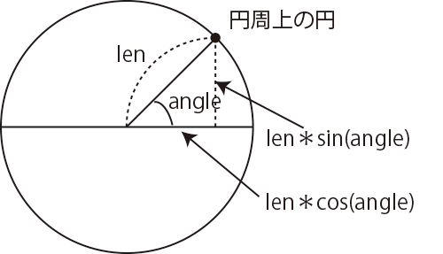

一方向の円運動…ひとつ(軌跡なし)
ひとつの円が、大きな円の円周上を一定速度で運動します。円周上での点の位置は、円の中央から見た点の角度で表します。時計の3時の位置が0度で、右回りに進みます(時計12時の位置は270度)。この角度angleの値を使って、 円周上点のx、y座標を計算します。計算には三角関数sin()とcos()を使います。x =len * cos(radians(angle)) + width/2.0; y =len * sin(radians(angle)) + height/2.0;

円周の中心を画面の中央(width/2.0, height/2.0)とするため、width/2.0とheight/2.0をx座標、y座標の計算にそれぞれ加えています。これを加えないと、座標の原点(0, 0)である画面の左上角を中心とした円の円周上での運動になります。角度angleが変化(angle + da)することで、円周上で点が移動します。
クリックで停止⇔再開
【リスト Circle1】
float angle; // 位置(角度)
float x, y;
float d = 10; // 円の直径
float da = 3; // 角度の変化量
float len = 60; // 軌跡の円の半径
void setup() {
size(150, 150); //描画するための画面
fill(0);
}
void draw() {
background(255); //画面背景を白でクリア
x =len * cos(radians(angle)) + width/2.0;
y =len * sin(radians(angle)) + height/2.0;
ellipse(x, y, d, d);
angle = (angle + da) % 360; //次の描画に備えて角度をdaずつ増加、360を超えない
}